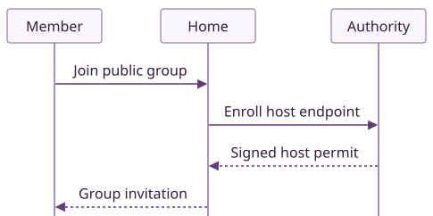

Public groups
A city book club and a worldwide reading group can each have a stable identity and a community feed hosted by several Homes.
Joining through your Home
A member chooses a group from the catalog. If the member’s Home needs permission to host it, it contacts the founding authority. After enrollment it returns the group and Home-specific join configuration to the member.

Creating a group
A member submits a name, description, category and optional coarse locality. The founding Home signs an immutable descriptor. Its owner identity and a hash of the descriptor distinguish groups with the same name. A city label supports discovery. A group without a locality is worldwide.
What the directory carries
Homes exchange owner-signed descriptors, owner-signed host permits and host-signed address announcements through configured seeds. Address announcements expire and can be renewed. Directory records carry public discovery information. Community access tokens travel in the member’s join configuration.
Hosting after enrollment
The authority authenticates the enrolling endpoint before signing its permit. An enrolled Home advertises its address and pulls group events from other permitted hosts. Existing hosts can continue exchanging events while the authority is offline. A new enrollment needs the authority and any required local peering approval.